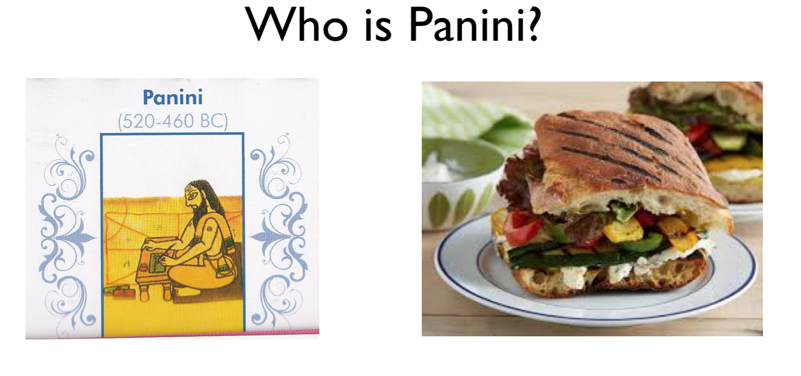
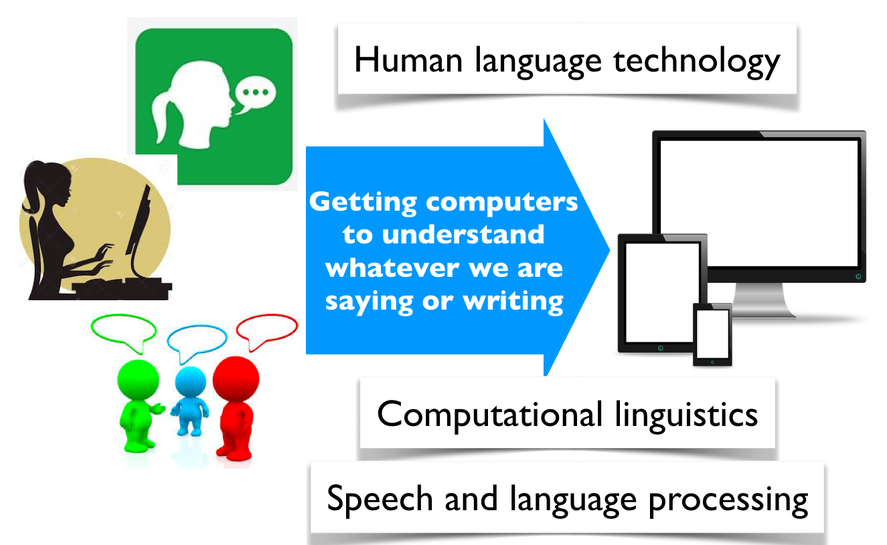
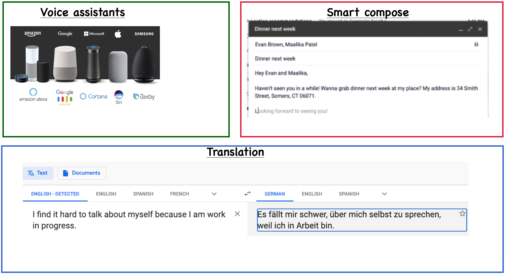

Course Information#
UBC Master of Data Science program, 2024-25
Learning outcomes#
From this lecture, students are expected to be able to:
Explain relevance of NLP and some goals of natural language processing (NLP).
Explain difficulties associated with NLP.
Name a few applications of natural language processing.
Map of ML courses in MDS#

What is Natural Language Processing (NLP)?#
What should a search engine return when asked the following question?

What is Natural Language Processing (NLP)?#
How often do you search everyday?#

What is Natural Language Processing (NLP)?#

Everyday NLP applications#

NLP in news#
Often you’ll NLP in news. Some examples:
Why is NLP hard?#
Language is complex and subtle.
Language is ambiguous at different levels.
Language understanding involves common-sense knowledge and real-world reasoning.
All the problems related to representation and reasoning in artificial intelligence arise in this domain.
Example: Lexical ambiguity#
Example: Referential ambiguity#
Ambiguous news headlines#
PROSTITUTES APPEAL TO POPE
appeal to means make a serious or urgent request or be attractive or interesting?
KICKING BABY CONSIDERED TO BE HEALTHY
kicking is used as an adjective or a verb?
MILK DRINKERS ARE TURNING TO POWDER
turning means becoming or take up?
High-level goals of this course#
Learn and apply new ML algorithms and methods with the theme of NLP applications.
Prepare you a bit for employment in the NLP area.
Have fun!

Course roadmap#
Week 1#
Markov models
Applications of Markov models#

Week 2#
Hidden Markov models

Week 3 and Week 4#
Introduction to Recurrent Neural Networks (RNNs)
Introduction to self attention and transformers
Applications of transformers
ASIDE: Neural Storyteller#

We were barely able to catch the breeze at the beach , and it felt as if someone stepped out of my mind . She was in love with him for the first time in months , so she had no intention of escaping . The sun had risen from the ocean , making her feel more alive than normal . She 's beautiful , but the truth is that I do n't know what to do ...
Tools we will be using in this class#
Make sure to set up the environment using the course environment file.
That’s all about course information!